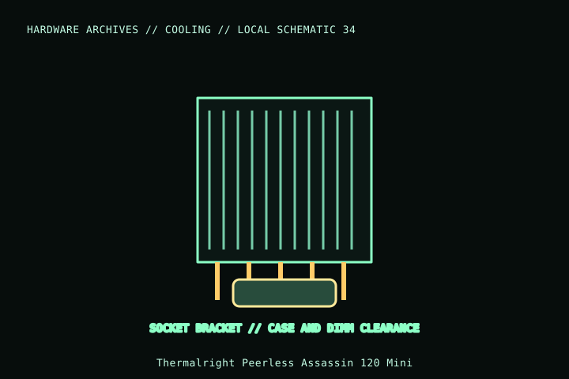

[ INDIVIDUAL COMPONENT // COOLING ]
Thermalright Peerless Assassin 120 Mini
A compact dual-tower Peerless Assassin variant with one 120 mm fan and a lower overall height than many dual-tower coolers. Exact dimensions and included fan arrangement differ from the standard PA120 SE.

MODEL IDENTIFICATION: Verify full model, suffix, SKU, generation, connector, and host-support documentation against the physical item. The record describes only the identified model and does not guarantee host compatibility.
Specifications
| Exact identity | Peerless Assassin 120 Mini |
|---|---|
| Heatsink envelope | 125 × 110 × 135 mm per manufacturer model listing; confirm orientation and whether the stated measurement includes fan. |
| Heatpipes / included fan | Six 6 mm heatpipes; one 120 × 120 × 25 mm PWM fan per listed package. |
| Socket mounting | Manufacturer lists supported Intel desktop sockets including LGA115x/1200/1700/1851 and AMD AM4/AM5; verify package contents/current compatibility. |
| Clearance | 135 mm nominal class; check exact fan/heatsink envelope against the case, DIMMs, VRM heatsinks, PCIe position, and motherboard layout. |
| Connection | 4-pin PWM fan lead; verify fan current against header/controller capacity. |
Compatibility and installation
- Use the manual for the exact Mini model; standard Peerless Assassin hardware and dimensions are not interchangeable.
- Confirm case-height allowance and fan/DIMM clearance for the actual fan position; do not infer compatibility from heatsink height alone.
- Connect fan to a rated 4-pin PWM header and confirm tach feedback after assembly.
Service notes
Power off and hold the fan stationary during cleaning. Reapply thermal compound after lifting the heatsink; inspect socket hardware and fan clips before reinstalling.
Manufacturer references
- Thermalright — Peerless Assassin 120 MiniManufacturer product page for the compact Mini model and socket list.
- Thermalright — SupportManufacturer mounting and support documents.
Model variants and revisions may change specifications or included hardware; the manufacturer’s exact product page/manual and the host manual take precedence.